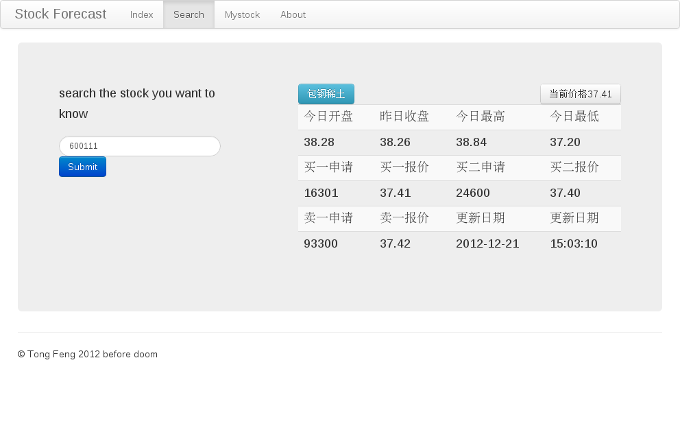
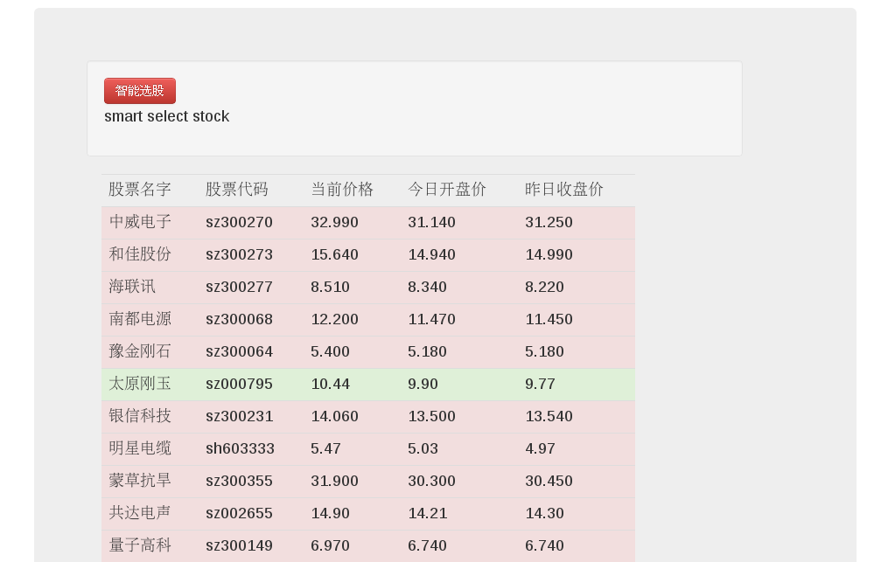

引言
The goal of this project is to have multiple student teams implement Web services (Chapter 8) for stock-prediction. Each Web service (WS) will track different stocks and, when queried, issue a forecast about the price movement for a given stock. The client module acts as a “facilitator” which gathers information from multiple Web services (“independent experts”) and combines their answers into a single recommendation. If different Web services offer conflicting answers, the client may repeat the process of querying and combining the answers until it converges towards the “correct” answer.
股票预测项目地址1. 任务概述
目标
人性化设计，可以方便的查询股票。并且都跟据客户的选择智能选出潜力股，可以保存用户的实际收益，便于统计结果
开发和运行环境
开发环境配置
操作系统: Ubuntu 12.04 64bit 内核： 1核处理器 内存信息： 512.00M 带宽： 1.00Mbps 运行环境配置
操作系统： CentOS 6.3 内存： 1.8GB 处理器: E6550@2.33GHz 网络环境： 教育网 测试环境测试
- 各种电脑
- 电信移动
- 各种手机
需求概述
．功能划分： （1）前台管理功能； （2）后台数据管理功能； （3）超级管理功能。 ．功能描述： （1）前台管理功能：可以登录页面，查看当前股票状态，查看自己关注的股 票历史信息，查看预测器给出的建议操作 （2）后台管理功能：查看用户的关注股票，保存股票历史信息，修改预测器 预测参数 （3）超级管理功能：能自由添加预测器 AI
条件与限制
- api限制
- 几乎所有api仅仅提供指向性股票查询，不能大批量查询,智能选股随时可能不能用
- 数据库限制
- 股票智能选取，需要将服务器长时间开启并收集数据，成本太大难以做到
- 时间紧迫
- 文档中复杂功能均未实现
2.总体设计
软件描述
功能1
基础功能，单个股票查询，并可以智能选择sh还是sz，或者报错
功能2
用户信息保存，分析用户需求，以及收益报告
功能3
智能选股，根据用户给出的参数选出股票
处理流程
- 将用户填写的股票或者参数打包成json传入服务器
- 服务器判断填写是否有误
- 服务器打包成正确格式请求新浪api
- 服务器返回数据给客户端
功能结构设计
结构：MVC
需求功能和代码程序关系
TODO..
3.接口设计
外部接口
服务器get接口
map.namespace('stock',function(stock){
stock.get("/mystock", "index#mystock");
stock.get("/about" , "index#about");
stock.get("/search" , "index#search");
stock.get("/query" , "index#query");
});
服务器post接口
map.namespace('stock',function(stock){
stock.post("/adduser" , "index#adduser");
stock.post("/getuserinfo" , "index#getuserinfo");
stock.post("/addstock" , "index#addstock");
});
内部接口
getSmartStock(url,opts);
opts = {
page : num;
pagesize: num;
hs_hsl : num;
hs_zf : num;
...
accesstoken : string;
}
4.数据结构设计
逻辑结构设计
服务器返回数据结构
sh603333: {id:明星电缆, today:5.03, yesday:4.97, now:5.47}
sz000795: {id:太原刚玉, today:9.90, yesday:9.77, now:10.44}
sz002364: {id:中恒电气, today:13.51, yesday:13.76, now:14.78}
sz002509: {id:天广消防, today:12.88, yesday:12.95, now:13.54}
sz002655: {id:共达电声, today:14.21, yesday:14.30, now:14.90}
sz002660: {id:茂硕电源, today:15.53, yesday:15.40, now:16.29}
服务器数据结构
stockjson[name] = {
id : _myarr[0],
today : _myarr[1],
yesday : _myarr[2],
now : _myarr[3]
};
5.数据库设计
数据库环境说明
存储数据使用MongoDB
快速查找使用redis
{ "development":
{ "driver": "redis"
, "host": "localhost"
, "port": 6379
}
,"staging":
{ "driver": "mongoose"
, "url": "mongodb://localhost/test"
}
,"production":
{ "username": "admin"
, "password": "admin"
}
}
使用database driver
redis && mongoose
数据库命名规则
定义schema
var User = define('User', function () {
property('name');
property('email', {index: true});
property('active', Boolean, {default: true});
property('createdAt', Date);
});
var Stock = define('Stock', function () {
property('stockid');
property('name');
proporty('price');
...
});
数据库安全性设计
用户不能直接操作数据库
只能通过sql注入入侵数据库
可以对用户输入的数据进行url encode
再通过正则删减过滤,然后进行sql操作
6.界面设计

- 
- 
7.出错处理设计
出错输出信息
错误的url请求
Sat Dec 22 2012 16:28:03 GMT+0800 (CST) GET /stock controller: stock/index action: undefined >>> perform undefined; Rendering stock/index/undefined using layout stock/index_layout Error: Undefined action stock#wrong
错误的股票代码
Sat Dec 22 2012 16:40:31 GMT+0800 (CST)
GET /stock/query?asdas controller: stock/index action: query
Query: {"asdas":""}
>>> perform query
wrong stock num
出错处理对策
| 页面错误： | 给出引导性的404 Page |
| 查询错误： | 返回wrong number |
| 前缀漏写： | 智能判断并添加 |
| 参数随意填写： | 前端不予通过强制重写 |
.______ .______ ___ ___ ___ __ ___ __ _____ ______
| _ \ | _ \ / _ \ / _ \ |__ \ /_ | / _ \ /_ | | ____| |____ |
| |_) | | |_) | | | | | | (_) | ) | | | | | | | | | | |__ / /
| ___/ | _ < | | | | \__, | / / | | | | | | | | |___ \ / /
| | | |_) | | |_| | / / / /_ | | | |_| | | | ___) | / /
| _| |______/ \___/ /_/ |____| |_| \___/ |_| |____/ /_/